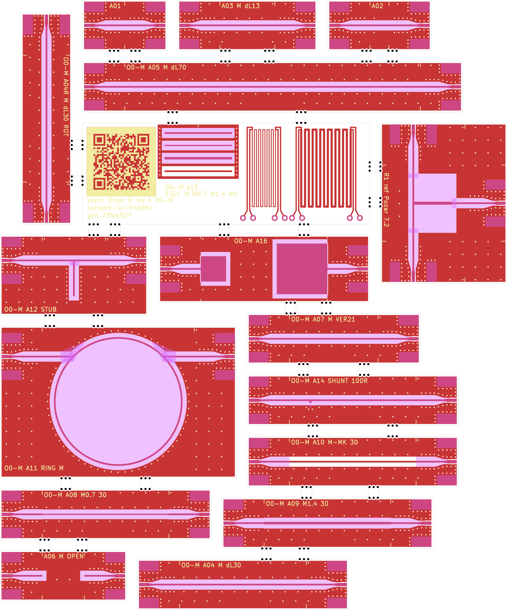
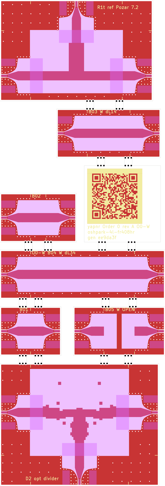
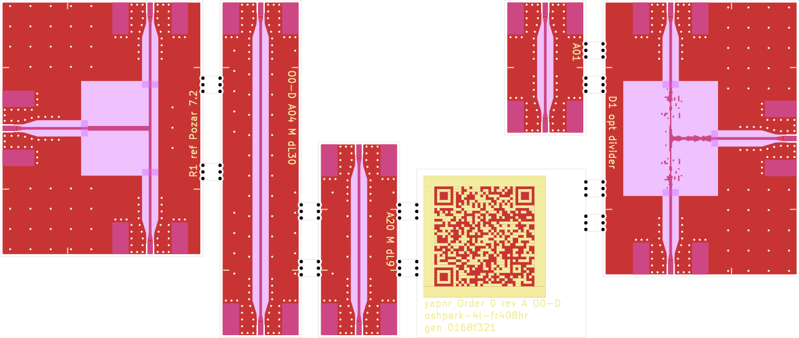

Order 0: OSH Park 4-layer RF demo and fab-model coupons¶
Status: pre-registration in preparation. Nothing has been uploaded, ordered or measured. The boards, predictions and criteria on these pages are drafts until the pre-registration release (below) is published; after that, predictions and criteria are never edited, and results are added as new commits next to them, misses included.
Order 0 is a small OSH Park 4-layer order that carries two things on one lot:
Fab-model coupons that measure what OSH Park actually builds (dielectric constant and loss of the prepreg and core, heights, copper, etch, solder mask) with a two-port VNA and multiline TRL, using yapnr’s coupon extraction (user guide).
Microstrip designs made by yapnr’s RF optimizer (a 3-port power divider on each of two cross-sections), measured against their own pre-registered simulations and against a textbook design built the way a designer would, with the same launches and the same pass/fail table.
The QR code on the boards’ tag stick points here.
The three uploads¶
All three are OSH Park standard 4-layer, FR408HR (the EM528 alternate is covered by the same models), 1.6 mm, ENIG, purple mask, 3 copies each, one frameless outline per upload: the sticks are separated by 2.54 mm milled slots and held by OSH Park’s suggested mouse-bite tabs, at least two per stick, only on edges that carry no connector (a 2-port stick’s long sides, a 3-port demo’s fourth edge), so every launch edge is a clean milled edge. Every port is a Cinch 142-0701-851 edge-launch SMA. Costs are OSH Park’s standard 4-layer price, $10 per square inch of the bounding rectangle, for 3 copies.
Upload |
Contents |
Size |
Cost |
SMAs per copy |
|---|---|---|---|---|
O0-M |
the thin-microstrip (region M) coupons, R1, A16, A04R, the tag |
120.1 × 144.3 mm, 26.9 sq in |
$269 |
33 |
O0-W |
the thick-microstrip (region W) calibration set, R1t, D2 ( |
54.0 × 158.7 mm, 13.3 sq in |
$133 |
16 |
O0-D |
the D1 window ( |
118.2 × 50.0 mm, 9.16 sq in |
$91.57 |
12 |
O0-W carries D2’s nearest miss, d2-star-sched (label 03b7d938), as a pre-registered design
that misses its spec, by the owner default recorded in the
pre-registration (the owner confirms or overrides it before the release),
and the small QR stick B15 to predictions/D2. Its Gerber zip’s sha256
is in fab/O0-W.sha256.
D1 passed (d1-star, label O0 D1 divider-osh-m 7e070ca8, superseding part 2’s ad20e643):
the part 2 export reproduced two 0.100 mm corner-gap violations against OSH Park’s 0.127 mm rule
under PR #53’s fixed exact-corner-gap DRC, so D1 was re-optimized from the same four
formulations under that fixed checker (predictions/D1-d1c);
d1-star is again the only formulation that passes coarse/fine/finer, now with a DRC-clean
export (134 repaired pixels, 24 floating islands, vs 30/14 under the old checker). O0-D is
regenerated with YAPNR_KICAD_CLI=<headless kicad-cli> python -m yapnr.rf.coupons generate --stackup OSHPARK-4L-FR408HR --upload D --out examples/rf-coupons/order0/O0-D: KiCad DRC 0
violations, 0 unconnected (10.0.6); yapnr fab build 0 errors (2 pre-existing informational
warnings: merged non-plated drill file, stackup thickness, the same pattern O0-W’s build has).
Its Gerber zip’s sha256 is in fab/O0-D.sha256.
Two solvers carry a prediction for this D1, compared like for like on nominal FR408HR: yapnr.rf’s own FDTD on M-nom puts it at the −20 dB |S11| spec line (−19.70 / −20.02 / −20.05 dB coarse / fine / finer; it passes the selection criteria with a 0.282 dB margin, and −20.77 dB on its M-eq design substrate), and an independent openEMS 0.37 run (43 µm copper, 0.05 mm mesh) predicts a 2.9 dB miss (−17.10 dB), essentially part 2’s finding on the old export; the two agree on |S21| within 0.14 dB. A third, Palace (FEM), was not run for D1 or R1 this round: this workflow’s separate $8 GCP cap left too little margin after the resubmission and validation campaigns, and Palace also needs a new divider-shaped planar adapter; open item for a follow-up. Details, campaign ids and the three-solver table are in predictions/D1-d1c/README.md.
The KiCad projects, catalogues and DRC results are in examples/rf-coupons/order0/.



Cross-sections¶
Region |
Signal over |
Dielectric |
50 Ω line |
L1 ground kept away |
Stick width |
|---|---|---|---|---|---|
M |
L1 over In1.Cu |
0.200 mm FR408HR prepreg |
0.40 mm (4 pixels of the optimizer’s 0.10 mm grid) |
1.0 mm (5 h) |
12 mm |
W |
L1 over B.Cu, In1/In2 removed |
0.200 + 0.991 + 0.200 mm |
3.0 mm (6 pixels of 0.50 mm) |
4.2 mm (3 h) |
16 mm |
The solder mask is open over all RF copper and its keep-away (the optimizer has no mask model), with 0.2 mm mask dams at the connector pads; one coupon (A10) keeps the mask on.
O0-M sticks¶
Stick |
Structure |
Size (mm) |
What it determines |
|---|---|---|---|
A01 |
thru: two launch halves (also the launch-only 2x-thru) |
20 × 12 |
mTRL thru; launch quality and repeatability |
A02-A05 |
M lines, ΔL 4.5, 13, 30, 70 mm |
24.5-90 × 12 |
γ(f): εeff and loss |
A06 |
reflect: the line open at both reference planes |
30 × 12 |
mTRL reflect |
A07 |
verification line, ΔL 21 mm |
41 × 12 |
residual calibration error |
A08, A09 |
width set: 0.28 and 0.56 mm over 30 mm |
50 × 12 |
Z0(w), α(w): etch, height, εr, the copper-thickness bias |
A10 |
the 0.40 mm line under mask over 30 mm |
50 × 12 |
mask Dk × thickness: OSH Park’s default against mask-open |
A11 |
ring, fed directly, the feeds a quarter turn apart (notches at n = 1 and 3: 1.92 and 5.79 GHz) |
56 × 36 |
held out: εeff |
A12 |
open λ/4 stub, notch at 5.5 GHz, on a 15 mm line |
35 × 19 |
held out: the open-end and T-junction models |
A14 |
30 mm line with a shunt 0402 100 Ω 5 mm from RP1 |
50 × 12 |
switch terms (both orientations) |
A15 |
4-wire meanders on L1 (0.20 × 200 mm, 0.50 × 250 mm), microsection lines, QR and tag |
68 × 24 |
w·t and etch; microsection; this page |
A16 |
6 mm and 12 mm square pads, each at the reference plane of a launch |
50 × 16 |
h (and so the absolute Z0) from C at 0.1-1 GHz |
A04R |
A04 turned 90° |
12 × 50 |
glass-weave direction |
R1 |
textbook divider: T-junction + λ/4 35.36 Ω transformer [Pozar §7.2, §5.5] |
30 × 38 |
the reference for D1 |
O0-W sticks¶
Stick |
Structure |
Size (mm) |
What it determines |
|---|---|---|---|
B01-B04 |
W thru and lines, ΔL 5, 14, 34 mm |
20-54 × 16 |
γ(f) of W: the core’s Dk, which region M cannot see |
B05 |
reflect, open at both reference planes |
30 × 16 |
mTRL reflect |
R1t |
the textbook divider on W |
33 × 50 |
the reference for D2 |
D2 |
the optimizer’s thick divider |
40 × 52 |
D2: a pre-registered miss of its spec (owner default) |
B15 |
QR to predictions/D2 and the tag text |
25 × 25 |
this page |
O0-D sticks¶
Stick |
Structure |
Size (mm) |
What it determines |
|---|---|---|---|
D1 |
the optimizer’s thin divider (12 × 15 mm, |
29 × 41 |
the headline demo (at the spec line on yapnr.rf, misses on openEMS) |
A15 |
small QR label stick to predictions/D1-d1c |
25 × 25 |
this page |
R1 |
a copy of O0-M’s R1 |
30 × 38 |
D1 and a reference on one lot |
A01, A20, A04 |
thru and lines ΔL 9 and 30 mm |
20, 29, 50 × 12 |
this lot’s εeff, loss and relative Z0 (the 9 mm line covers 5-6 GHz) |
The demos and their references¶
Demo |
Specification |
Window |
Reference |
|---|---|---|---|
D1 (O0-D) |
4.25-5.75 GHz: |S11| ≤ −20 dB, |S21|, |S31| ≥ −3.4 dB (confirmed by run 0b) |
region M, 12 × 15 mm, ports W / N / S |
R1: arm 0.70 × 9.0 mm (9.2 mm to the junction centre) |
D2 (O0-W) |
the same |
region W, 20 × 24 mm, ports W / N / S |
R1t: arm 5.0 × 9.25 mm (10.75 mm to the centre) |
Each demo port has exactly the coupons’ launch (10 mm from the milled edge to its reference plane) and a straight feed (3 mm on M, 4 mm on W) to the window, so the comparison plane is the optimizer’s own port plane. No other L1 copper lies within 1.0 mm (M) or 4.2 mm (W) of a window.
R1 and R1t are drawn as a designer would: the arm is the 2D-solved width nearest the ideal transformer impedance, a quarter wave long at 5.0 GHz counted from the T-junction’s reference plane, which lies 0.37 mm (M) and 2.18 mm (W) beyond the output line’s centre line (Hammerstad’s T-junction model). Counted to the centre line instead, R1 would sit 4 % and R1t 25 % high in frequency. Every edge lies on the grid the optimizer’s FDTD predicts them on: 0.05 mm (M) and 0.25 mm (W), its second refinement (R1’s 0.70 mm arm cannot be centred on the 0.10 mm grid).
Pages¶
Pre-registration: what is frozen before upload, the draft criteria and the analysis order.
Measurement procedure: the LibreVNA set-up, the two-tier calibration and the sequence per copy.
Predictions: the coupons’ expected S-parameters on FR408HR and EM528, and the places for D1 and D2.
Demos: D1’s and D2’s specs, substrates (thickness-equivalent) and formulations, the references’ forward runs, and run 0b (the solver’s loss correction and the |S21| criterion).
Regenerating¶
YAPNR_KICAD_CLI=<headless kicad-cli> python -m yapnr.rf.coupons generate \
--stackup OSHPARK-4L-FR408HR --upload M --out examples/rf-coupons/order0/O0-M
python -m yapnr.rf.coupons expected --stackup OSHPARK-4L-FR408HR --upload M \
--out docs/rf/order0/predictions/coupons/O0-M
yapnr fab check examples/rf-coupons/order0/O0-M/O0-M.kicad_pcb --vendor oshpark \
--profile oshpark-4l --stackup oshpark-4l-fr408hr
(and --upload W, --upload D).